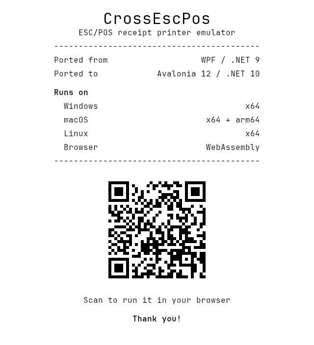

CrossEscPos
A receipt printer emulator for testing ESC/POS code. Point your point-of-sale software at it over TCP, serial or USB, and the receipt prints on screen.
It started as a Windows-only WPF app. This is the Avalonia 12 port: one codebase that runs on Windows, macOS, Linux and in the browser.

Before and after


What the migration cost
Starting point
The upstream app, roydejong/EscPosEmulator, targeted net9.0-windows7.0 with UseWPF: 48 C# and XAML files, about 2,400 lines. Windows was wired in at four levels.
- Rendering. Every receipt line drew itself with GDI+ (
System.Drawing), which is Windows-only on .NET 6 and later. The GDI+ types were part of the core interface,IReceiptPrintable.Render(Bitmap, Graphics, int, int). To show a receipt, the window saved each bitmap to a BMP stream and loaded it back as a WPFBitmapImage. - UI. Code-behind only. The window created
Imagecontrols by hand, found them again by a GUID-based name, and added or removed them from aStackPanel. - OS calls. A
user32!FlashWindowP/Invoke andSystemSoundssignalled new jobs. - Assumptions. TCP was the only transport, and the test receipt was read from the current working directory.
The ESC/POS interpreter (one command class per opcode) had no UI or Windows dependency, so its design carried over unchanged. It is now the headless CrossEscPos.Core package.
What changed, and what each part took
| Area | WPF original | Avalonia port | What it took |
|---|---|---|---|
| Rendering | GDI+ Bitmap and Graphics | SkiaSharp behind a backend-neutral IReceiptCanvas, plus a fully managed ImageSharp backend | The biggest single job. The text-line renderer was rewritten. System fonts differ per OS, so the same receipt measured differently on each; embedding JetBrains Mono made output identical everywhere. |
| UI | XAML and code-behind | AXAML and MVVM (CommunityToolkit.Mvvm), with receipts bound to a reusable ReceiptView | The markup ported almost line for line. The work was moving code-behind into view models and bindings. |
| Win32 calls | FlashWindow, SystemSounds | A notification service: afplay, Console.Beep or paplay per OS, plus an in-window toast | There is no cross-platform system-sound API, so each OS gets its own strategy. |
| Files | Relative to the working directory | Avalonia StorageProvider for PNG export; app-relative asset paths | The working-directory assumption broke in the packaged app and was fixed right after the first release. |
| Transports | TCP | TCP and serial; the built-in Monitor adds direct USB through libusb | Port names differ per OS. A Homebrew-installed libusb wasn't found until the app added the usual install paths to the native search path at startup. |
| Packaging | One Windows .exe | Self-contained builds for four targets from one CI matrix, including a macOS .app | Unsigned macOS bundles were reported as damaged, so the bundle is ad-hoc signed and the README explains how to clear the quarantine flag. |
| Browser | None | The same app as an Avalonia WebAssembly head | A browser can't listen on TCP, so an ASP.NET Core SignalR host opens the socket and relays jobs to the page. Serial and USB use Web Serial and WebUSB. Export downloads a file instead of opening a save dialog. |
The numbers
Seven days with commits over five weeks, according to the git history:
- The port itself and desktop feature parity (PRs #1–#7).
- Split into layered packages with a swappable render backend (#8–#10).
- Managed ImageSharp backend, then the browser version (#11–#16).
- From 48 files and about 2,400 lines to 168 files and about 10,000 lines of C# and AXAML, across 11 projects, 2 samples and 2 test projects. Most of the growth is new features, such as barcodes, 2D codes, status replies, printer-state simulation, the Monitor and the browser version, not port overhead.
- 131 xUnit tests (89 test methods) run the interpreter against a synthetic render backend, which proves the core runs headless. The controls are tested with Avalonia.Headless.
- Built with AI assistance (Claude Code). The commits say so in their
Co-Authored-Bytrailers.
What was easy, and what hurt
Easy: XAML to AXAML, the Fluent theme, Dispatcher.UIThread and headless UI testing. The UI layer was the smallest part of the port.
Hurt: removing GDI+. It was part of the core interfaces, not just the view, so the renderer had to be redesigned before anything else could move. After that came native dependencies that differ per OS (libusb, fontconfig on Linux, macOS signing) and the browser sandbox, which has no sockets and no raw file system.
Would do again: put the drawing surface behind an interface first. Once IReceiptCanvas existed, the ImageSharp backend (a community contribution) and the browser version each landed within a few days.
Downloads
- Windows (x64)zip, self-contained
- macOS (Apple silicon).app bundle
- macOS (Intel).app bundle
- Linux (x64)tar.gz, self-contained
- Browserno install; Web Serial and WebUSB need Chrome or Edge
No .NET install is needed. On macOS, if the app is reported as damaged, run xattr -dr com.apple.quarantine CrossEscPos.app once. In the browser, TCP printing needs the small relay host: run dotnet run --project samples/CrossEscPos.Host and open the page it serves.